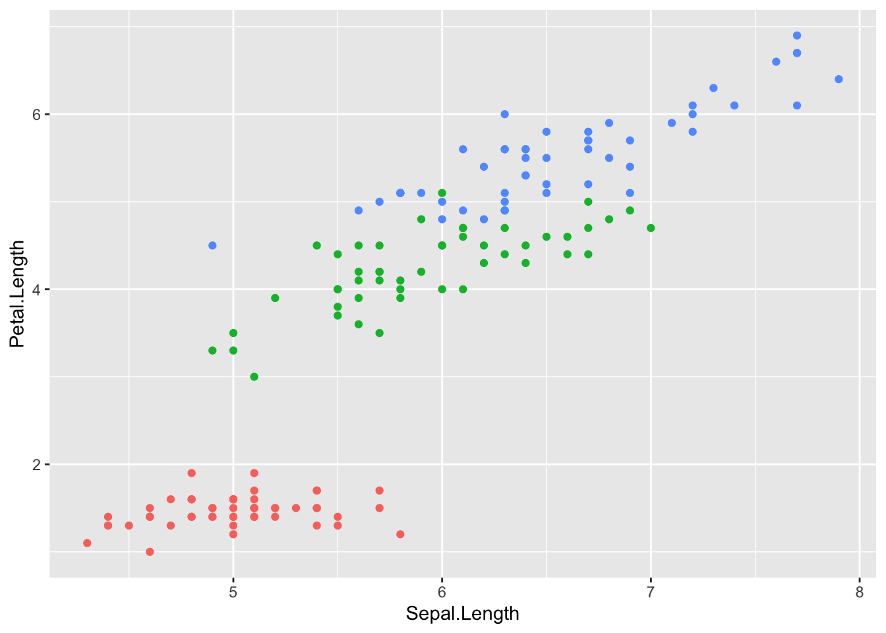

Тема 7 Воспроизводимые исследования
7.1 О воспроизводимости
Полученный в результате количественных исследований результат должен быть проверяем и воспроизводим. Даже на заре стилометрии, когда все вычисления проводились вручную, ученые стремились максимально подробно задокументировать свои вычисления: какие слова они считали, в каких текстах и т.п. Об одном исключении из этого правила можно прочитать вот здесь.
Сегодня к документации исследования предъявляются гораздо более строгие требования: в большинстве случаев недостаточно просто рассказать, что вы проделали. Теоретически читатель должен иметь возможность проделать тот же путь, что и автор: вопроизвести его результаты, но в обратном направлении.
Воспроизводимость (reproducibility) – это не то же, что повторяемость (replicability). Ученый, который повторяет исследование, проводит его заново на новых данных. Воспроизведение – гораздо более скромная задача, не требующая таких ресурсов, как повторение (Winter 2020, 47).
Иллюстрация ниже заимствована из книги Роджера Пенга, специалиста по биостатистике31. За тем исключением, что вместо квадратика “Nature” в гуманитарном исследовании будет квадратик “Culture”, общие принципы те же: все, что вы делаете – от сбора данных до их оформления в виде графиков – должно быть задокументировано и воспроизводимо.

Для этого должны выполняться три основных требования:
- доступность данных и метаданных;
- доступность компьютерного кода;
- доступность программного обеспечения.
Именно поэтому всегда, когда возможно, преимущество должно отдаваться свободно распространяемому ПО. В этом смысле R имеет преимущество перед такими программами, как SPSS, SAS, Matlab, STATA и др.
Все, что вы делаете на “не имеющем аналогов в мире” закрытом ПО может быть увлекательно лично для вас, но не отвечает научным критериям проверяемости. Поэтому многие разработчики, создающие приложения для анализа текста, тоже выкладывают их на GitHub. (Пример).
Правило второ: код имеет преимущество перед GUI (Graphical User Interface): вспомнить, какие кнопки в каком порядке были нажаты, даже самому автору бывает непросто. От скачивания файла до экспорта графиков – все должно быть зафисировано, причем в виде, понятном не только для машины, но и для человека. Некоторые пакеты в R оснащены GUI (например, stylo), но пользоваться им лучше умеренно, пока вы только знакомитесь с инструментом.
Правило третье: код и сырые данные для статьи принято публиковать на GitHub. Исследователи, работающие с разными изданиями Аристотеля, могут прийти к разным выводам. Вопроизвести ваше исследование на других данных может быть невозможно. Если вы работаете с материалом, защищенным копирайтом, на GitHub можно настроить доступ к репозиторию: он не будет виден всем, но, например, рецензенты смогут проверить ваши выводы32.
Авторитетный International Journal of Digital Humanities прямо пишет в инструкциях для авторов:
Please ensure you provide all relevant editable source files at every submission and revision. Failing to submit a complete set of editable source files will result in your article not being considered for review.
Уже на этапе планирования исследования очень важно продумать, как вы будете его документировать. Это делается не после того, как вы все выяснили, а в процессе.
Правило четвертое: код пишется не только для машин, но и для людей. Важно документировать не только то, что вы делали, но и почему. R дает для этого множество возможностей, главная из которых – это Markdown33.
7.2 Markdown
Markdown – это облегчённый язык разметки. Он позволяет создавать документы разного формата – не только HTML (веб-страницы), но и PDF и Word. В R Markdown создается огромное количество документов - сайтов, статей и книг (например, этот курс), презентаций, отчетов, дашбордов и т.п.
При этом Markdown позволяет писать код не только на R, но и других языках – например, на Python; это дает возможность создания полностью воспроизводимых документов, сочетающих код и поясняющий текст.
Чтобы начать работать с документами .rmd, нужен пакет rmarkdown; в RStudio он уже предустановлен. Создание нового документа .rmd происходит из меню34:

По умолчанию документ .rmd снабжен шапкой yaml. Она не обязательна. Здесь содержатся данные об авторе, времени создания, формате, сведения о файле с библиографией и т.п.
---
title: "Demo"
author: "My name"
date: "2023-09-08"
output: html_document
---Также в документе .rmd скорее всего будет простой текст и блоки кода. Чтобы “сшить” html (pdf, doc), достаточно нажать кнопку knit. Либо можно запустить в консоли код: rmarkdown::render("Demo.Rmd"). После этого в рабочей директории появится новый файл (html, pdf, или doc), которым можно поделиться с коллегами, грантодателями или друзьями.
7.3 Синтаксис Markdown
7.3.1 Заголовки
Заголовки разного уровня задаются при помощи решетки35:
# Заголовок первого уровня
## Заголовок второго уровня
### Заголовок третьего уровня
#### Заголовок четвёртого уровняПример заголовка третьего уровня:
7.3.2 Форматирование
*курсив*
_курсив_
**полужирный**
__полужирный__
***полужирный курсив***
___полужирный курсив___
~~зачеркнутый~~
<mark>выделение</mark>Пример:
курсив
полужирный
уж и не знаю как выделить
зачеркнутый
выделение
7.3.3 Списки
Нумерованный список
1. Пункт первый
2. Пункт второй
3. Пункт третийПример:
- Пункт первый
- Пункт второй
- Пункт третий
Маркированный список
- Пункт первый
- Пункт второй
- Пункт третийПример:
- Пункт первый
- Пункт второй
- Пункт третий
Также Markdown позволяет делать вложенные списки:
1. Пункт первый
- Подпункт первый
- Подпункт второй
2. Пункт второйПример:
- Пункт первый
- Подпункт первый
- Подпункт второй
- Пункт второй
Самое удобное, что элементы списка не обязательно нумеровать:
(@) Пункт первый.
(@) Пункт не знаю какой.- Пункт первый.
- Пункт не знаю какой.
7.3.5 Изображения
Пример:

Два нюанса:
- можно давать ссылки на локальные файлы (то есть такие файлы, которые хранятся на компьютере)
- изображения можно вставлять, пользуясь непосредственно разметкой html.
<img src="images/my_image.jpg" width=40%>7.3.6 Блоки кода
Можно вставлять непосредственно в текст, это будет выглядеть вот так; для этого код выделяют одинарным обратным апострофом (грависом). Но чаще код дают отдельным блоком. Эти блоки можно именовать; тогда в случае ошибки будет сразу понятно, где она случилась36.
```{}
some code here
```В фигурных скобках надо указать язык, например {r}, тогда код будет автоматически подсвечен.
Там же в фигурных скобках можно задать следующие параметры:
eval = FALSEкод будет показан, но не будет выполняться;include = FALSEкод будет выполнен, но ни код, ни результат не будут показаны;echo = FALSEкод будет выполнен, но не показан, результаты при этом видны;message = FALSEилиwarning = FALSEпрячет сообщения или предупреждения;results = 'hide'не распечатывает результат, аfig.show = 'hide'прячет графики;error = TRUE“сшивание” продолжается, даже если этот блок вернул ошибку.
7.3.7 Цитаты
> Omnia praeclara rara.Пример:
Omnia praeclara rara.
Цитата с подписью может быть оформлена так:
> Omnia praeclara rara.
>
> --- CiceroПример:
Omnia praeclara rara.
— Cicero
7.3.9 Таблицы
Таблицы можно задать вручную при помощи дефисов - и вертикальных линий |; идеальная точность при этом не нужна. Перед таблицей обязательно оставляйте пустую строку, иначе волшебство не сработает.
| Фрукты | Калории |
| ----- | ---- |
| Яблоко | 52 |
| Апельсин | 47 |Пример:
| Фрукты | Калории |
|---|---|
| Яблоко | 52 |
| Апельсин | 47 |
По умолчанию Markdown распечатывает таблицы так, как они бы выглядели в консоли.
## Sepal.Length Sepal.Width Petal.Length Petal.Width Species
## 1 5.1 3.5 1.4 0.2 setosa
## 2 4.9 3.0 1.4 0.2 setosa
## 3 4.7 3.2 1.3 0.2 setosa
## 4 4.6 3.1 1.5 0.2 setosa
## 5 5.0 3.6 1.4 0.2 setosa
## 6 5.4 3.9 1.7 0.4 setosaДля дополнительного форматирования можно использовать функцию kable::knitr():
| Sepal.Length | Sepal.Width | Petal.Length | Petal.Width | Species |
|---|---|---|---|---|
| 5.1 | 3.5 | 1.4 | 0.2 | setosa |
| 4.9 | 3.0 | 1.4 | 0.2 | setosa |
| 4.7 | 3.2 | 1.3 | 0.2 | setosa |
| 4.6 | 3.1 | 1.5 | 0.2 | setosa |
| 5.0 | 3.6 | 1.4 | 0.2 | setosa |
| 5.4 | 3.9 | 1.7 | 0.4 | setosa |
Интерактивную таблицу можно создать так:
7.3.11 Внутренние ссылки
Удобны для навигации по документу. К названию любого раздела можно добавить {#id}.
[Вернуться к чек-листам](#id)Пример:
7.3.12 Графики
Markdown позволяет встраивать любые графики.
library(ggplot2)
ggplot(aes(x = Sepal.Length, y = Petal.Length, col = Species), data = iris) +
geom_point(show.legend = F)
Для интерактивных графиков понадобится пакет plotly:
7.3.13 Математические формулы
Пишутся с использованием синтаксиса LaTeX, о котором можно прочитать подробнее здесь.
Формулы заключаются в одинарный $, если пишутся в строку, и в двойной $$, если отдельным блоком.
\cos (2\theta) = \cos^2 \theta - \sin^2 \thetaВот так это выглядит в тексте: \(\cos (2\theta) = \cos^2 \theta - \sin^2 \theta\).
А вот так – блоком:
\[\cos (2\theta) = \cos^2 \theta - \sin^2 \theta\]
7.3.14 Библиография
Чтобы привязать библиографию, нужно указать имя файла в шапке yaml.
---
bibliography: bibliography.bib
---Дальше, чтобы добавить ссылку, достаточно ввести ключ публикации после @ (в квадратных скобках, чтобы публикация отражалась в круглых): [@wickham2016].
Пример:
7.3.15 Смайлы
Удобнее вставлять через визуальный редактор (“шестеренка” > Use Visual Editor), но можно и без него:
## 🍎Код можно записать в строку, тогда смайл появится в тексте: 💀.37
Литература
https://rdpeng.github.io/Biostat776/lecture-reproducible-research-and-r-markdown.html↩︎
Весьма поучительная статья: https://www.journals.uchicago.edu/doi/full/10.1086/702594 с весьма поучительной дискуссией вокруг нее: https://critinq.wordpress.com/2019/04/12/more-responses-to-the-computational-case-against-computational-literary-studies/↩︎